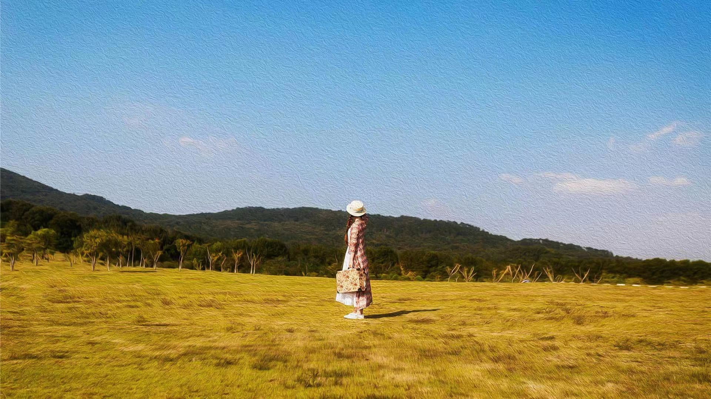

比赛现场照片
比赛概况
2023年国际人工智能图像处理大赛是由XXX协会和XXX大学联合举办的国际性赛事，吸引了来自全球40多个国家和地区的200余支队伍参赛。大赛分为图像增强、目标检测、图像分割等多个赛道，参赛选手需要在规定时间内完成算法设计与实现，并进行现场展示和答辩。
我工作室派出由5名成员组成的参赛队伍，经过初赛、复赛的层层选拔，最终晋级决赛，并在图像增强赛道中获得一等奖的优异成绩。
获奖项目介绍
本次参赛项目"多场景自适应图像增强算法"是工作室在低光照增强与雨雾去除研究基础上的创新成果。该算法能够根据不同场景自动识别图像中的低光照、雨、雾等退化因素，并应用相应的增强策略，实现高质量的图像恢复。
与传统图像增强算法相比，我们的方法具有以下几个创新点：
- 基于深度学习的场景自适应识别模块，能够精确判断图像中的主要退化类型；
- 多任务学习框架，同时处理多种图像退化问题；
- 引入注意力机制，关注图像中需要重点增强的区域；
- 轻量级网络设计，降低计算复杂度，适合移动端部署。
算法在公开数据集上的测试结果表明，相比现有方法，我们的算法在PSNR、SSIM等客观指标上有显著提升，同时在主观视觉效果上也得到了评委的一致认可。
"该团队的算法在多种复杂场景下都展现出了优异的图像增强能力，尤其是在夜间雨雾天气等极端条件下的表现令人印象深刻。算法的自适应特性使其具有广泛的应用前景。"
— 大赛评委
团队成员感言
团队负责人表示："这次比赛不仅是对我们技术能力的检验，更是对团队合作精神的锻炼。在准备过程中，我们遇到了很多挑战，但大家齐心协力，发挥各自专长，最终取得了好成绩。特别感谢江爱文教授的悉心指导和学院的大力支持。"
另一位团队成员补充道："参加国际比赛让我们开阔了视野，了解了计算机视觉领域的最新发展趋势。与其他国家的选手交流也给我们带来了很多启发，希望未来能将这些经验应用到我们的科研工作中。"